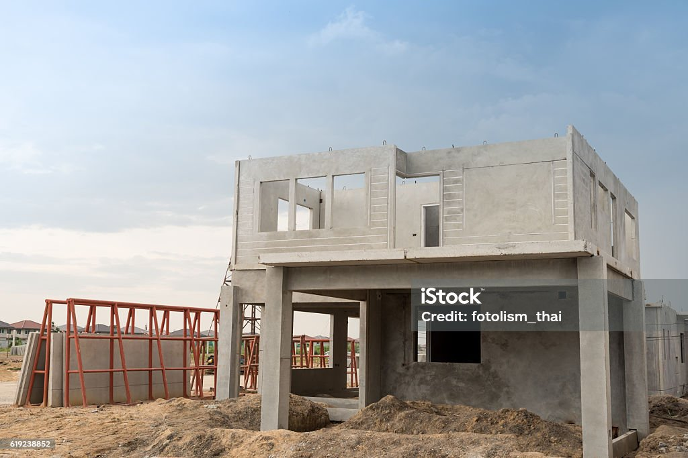

NEWS
Compassionate Build Inc Construction Company Achieves Milestone in Sustainable Building Projects
Date: [23 June 2023]
Location: [Johannesburg ,Alberton,Gauteng]
Introduction: [Joburg,Alberton] - Compassionate Build Inc Company, a leading player in the construction industry, has recently reached a significant milestone in their commitment to sustainable building practices. With a strong focus on innovation and environmental responsibility, the company has been making headlines for its groundbreaking projects.
Details: Sustainable Building Practices:Compassionate Build Inc Construction Company has been at the forefront of promoting environmentally friendly construction methods. They have successfully completed several LEED-certified projects in the past year, showcasing their dedication to reducing the carbon footprint of construction. Cutting-Edge Technology: The company has embraced the latest construction technology, including the use of 3D printing for certain structural elements, AI-driven project management systems, and advanced materials that enhance energy efficiency. Community Engagement: In addition to their sustainable efforts, Compassionate Build Inc Construction Company has been actively involved in the communities where they operate. They recently sponsored a local vocational training program, providing opportunities for aspiring construction professionals to learn and grow.